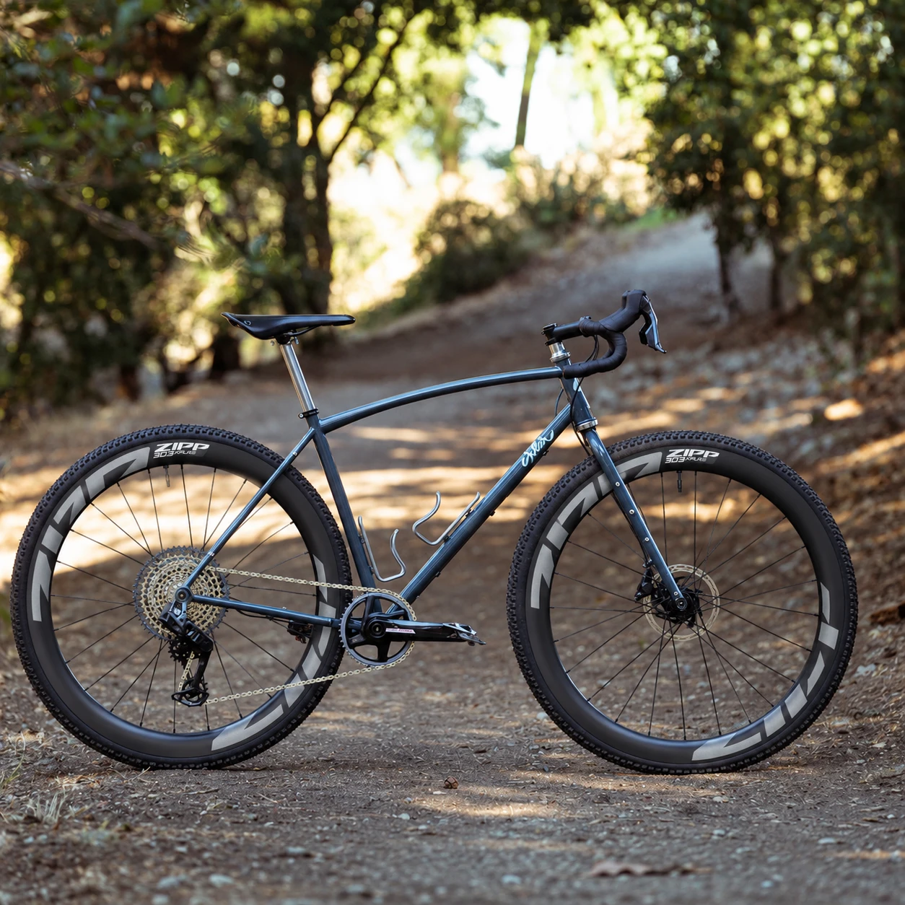

Sklar SuperSomething V2 · M-L · the build
Every part for a Sklar SuperSomething V2 in M-L, built around the numbers on the dial-in page. Links and prices are bike24.de as read on 18 Oct 2026, incl. MwSt.; they will drift. Anything marked check is unverified — see the notes at the bottom.

| Part | Notes | Price |
|---|---|---|
| Sklar SuperSomething V2 frameset, M-L | Chromoly, 1100 g uncut steel fork. Ships with the 30 mm seat collar, 12 × 1.5 thru-axles (164 / 120) and cable clips. No headset, spacers, top cap or star nut. | sklarbikes.com |
| Sklar headset alternative | Woodman-made, EC34 / EC44, 30 mm race included free for a 1-1/8" steerer. Guaranteed fit, ships from the US. Replaces the three Cane Creek parts below. | 95 USD |
| Part | Notes | Price |
|---|---|---|
| Zipp 303 XPLR S wheelset, dark grey | Hookless, 32 mm internal, centrelock, 12×100 / 12×142, XDR. Rim tape included; valves probably. | 979,99 € |
| SRAM Rival XPLR AXS 1×13 E1 groupset change chain | 10–46, 165 mm, Full Mount derailleur on the UDH. Pick the 126-link chain option, not 114 — SRAM's calculator gives 118 links at 426 mm. No BB, no rotors in the box. | 956,99 € |
| Zipp Service Course SL stem, −17°, 80 mm | 31.8 bar clamp, 1-1/8" steerer. 90 mm matches the Tutto's reach; 80 puts the bar 10 mm closer. | 79,99 € |
| Zipp Service Course SL 70 XPLR bar, 40 cm | Flared gravel drop, 31.8. | 89,99 € |
| Zipp Service Course SL carbon seatpost, 27.2, 20 mm | 400 mm. About 100 mm shows, 300 goes in; well past the 90 mm minimum. Test-fit dry first. | 105,99 € |
| Basket | 2.212,95 € |
| Part | Notes | Price |
|---|---|---|
| SRAM DUB BSA 68 Road-Wide BB out of stock | The crank is DUB Wide, so it must be Road-Wide — not standard DUB, not MTB Wide. Try another shop if bike24 stays empty. | 32,99 € |
| SRAM DUB BSA cups + Hope Road-Wide spacer kit check | In-stock fallback for the BB above. Spacers must come out at 2.5 mm left, 5.5 mm right. | 38,88 € |
| 2 × SRAM Paceline A2 centrelock rotor, 160 | Frame and fork are 160 direct. Lockrings included. | 75,98 € |
| Cane Creek 40 headset top, EC34/28.6 | Sklar's spec is EC34/28.6 top, EC44/30 bottom. | 37,99 € |
| Cane Creek 40 headset bottom, EC44/40 | Lower cup. | 41,99 € |
| Cane Creek 40 crown race, 52/30 check | 30 mm race for the straight 1-1/8" steel steerer. | 13,59 € |
| Ritchey WCS top cap + star nut, 1-1/8" | Steel steerer, so a star nut, not an expander. | 7,69 € |
| Spank 1-1/8" spacer set | For the 10–20 mm left above the stem before cutting the steerer. | 7,49 € |
| 2 × Zipp XPLR Inter 45 by Goodyear | On Zipp's hookless list and labelled at mounted width, so ~45 against the frame's 52. | 107,98 € |
| Milkit tubeless sealant, 500 ml | 60–90 ml per tyre. | 17,99 € |
| Zipp Service Course bar tape | Or the thicker CX version, 18,59 €. | 16,59 € |
| Shimano XT PD-M8100 pedals | 342 g, double-sided SPD; your SH51 / SH56 cleats fit. Options below. | 74,99 € |
| Still to buy | with the Road-Wide BB, not the fallback | 435,27 € |
| Parts total | basket + still to buy, before the frameset | 2.648,22 € |
| Part | Notes | Price |
|---|---|---|
| Shimano XTR PD-M9200 pedals | 318 g. 24 g lighter than XT for 50 € more. | 124,99 € |
| LOOK X-Track Race Carbon Ti pedals | ~290 g, the lightest; takes SPD cleats. | 166,99 € |
| Zipp XPLR Slick 45 by Goodyear | Faster on hardpack; same width rules as the Inter. | 52,99 € |
| Zipp XPLR Inter 50 by Goodyear | Mounts ~50, only ~2 mm spare against 52. Not for mud. | 51,99 € |
| Schwalbe G-One RS Pro 45 | Approved; mounts ~49 on this rim. Buy the Pro. | 51,99 € |
| Panaracer Gravelking X1 TLR 45 | Approved; mounts ~49. | 40,99 € |
| SRAM BSA DUB BB tool | If you fit the BB yourself. | 23,49 € |
| SRAM bleed kit V2 Pro, DOT 5.1 | Only if you shorten the brake hoses yourself; otherwise the shop does it. | 70,99 € |
Sources. Full research, with every claim cited to Sklar, SRAM, Zipp, Shimano or LOOK: build list, wheels against the frame, seatpost insertion. Unverified there and marked check here: the Hope spacer kit's exact sizes, the Cane Creek race fit, the E1 caliper bolt lengths, and whether valves come with the wheels.